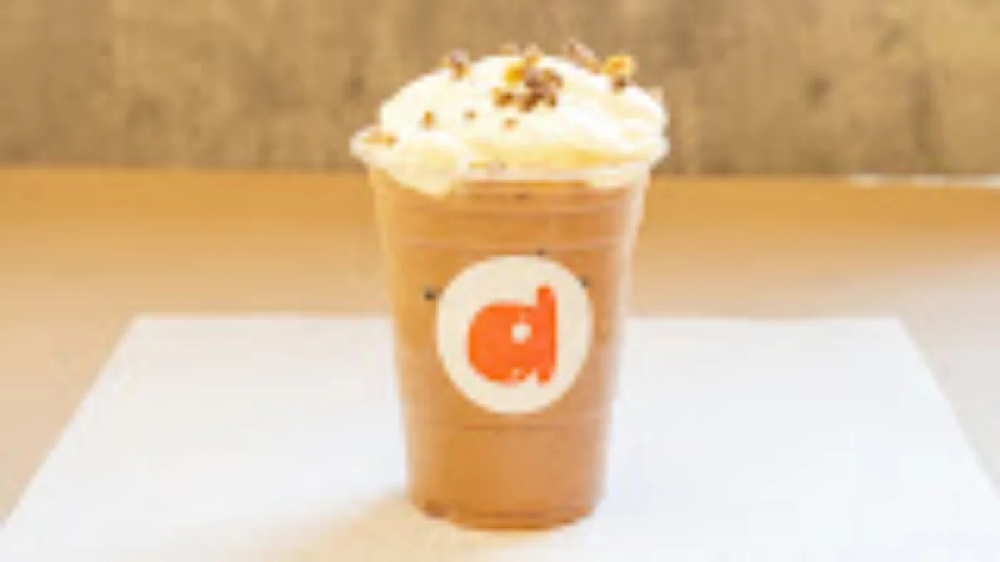
Your coffee moment.
Espresso drinks and a good reason to pause. Start your downtown wander with a cup in hand.
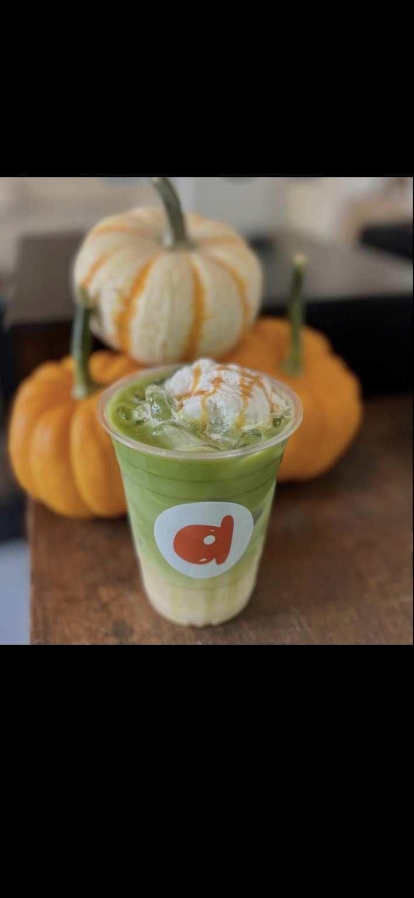
A coffee to slow down with. A pastry to brighten your day. A little something good to take home.
Find your next small pleasure at Petite Marché, in the heart of downtown Flagstaff.
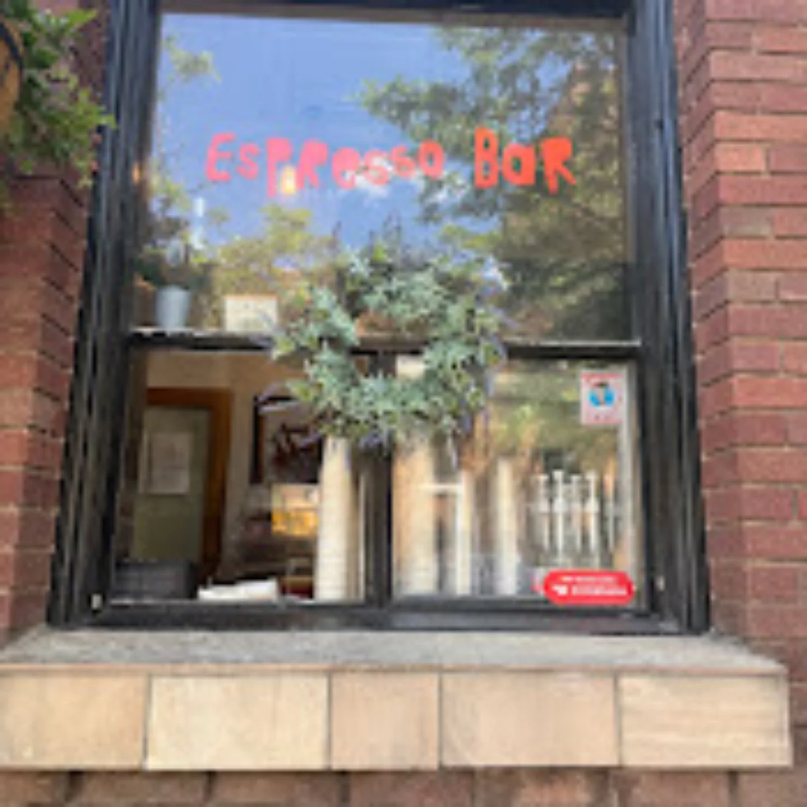
Pop in for a coffee, browse the shelves, and see what catches your eye.

Espresso drinks and a good reason to pause. Start your downtown wander with a cup in hand.
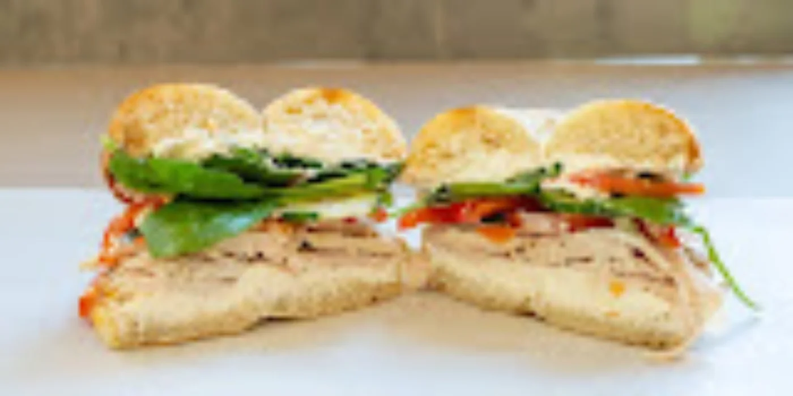
Discover baked goods, bagels, and pastries. Ask at the counter for the day's selection.
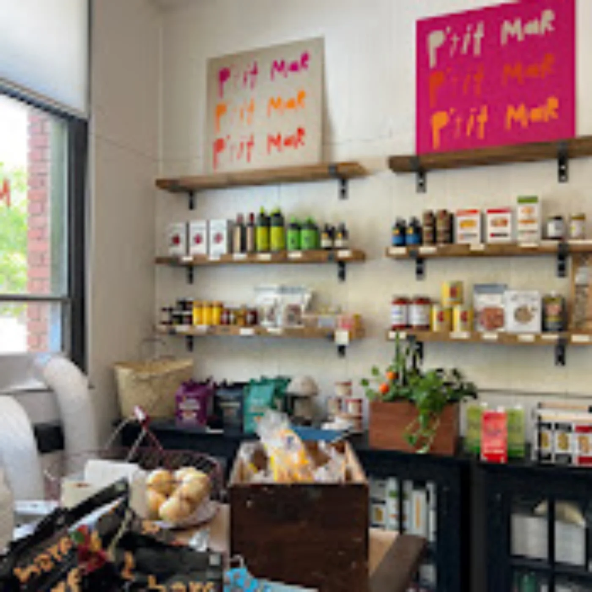
Browse produce, pantry provisions, ready-meal finds, and wine. Bring a little of the market home.
Selections vary. Stop by or call for current offerings.
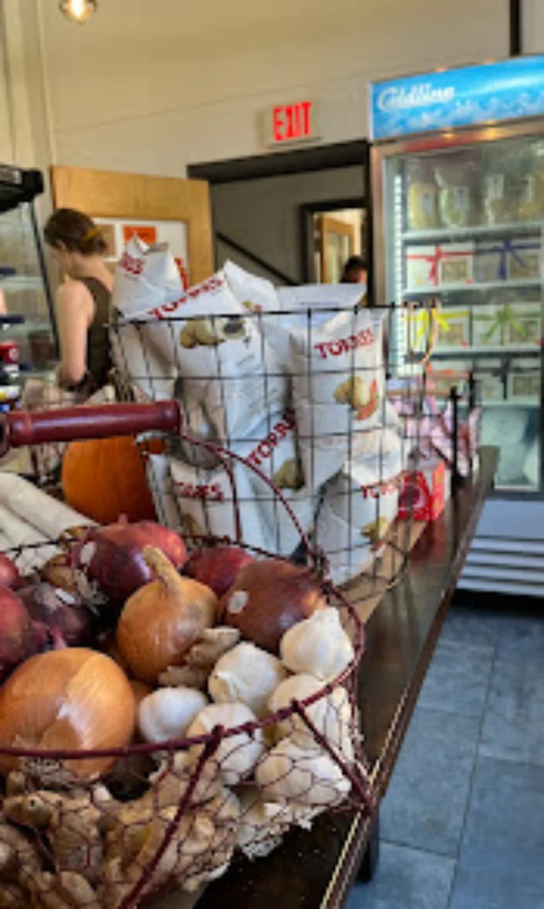
From the creators of Forêt FLG, Petite Marché brings a market and espresso bar together on Aspen Avenue.
Come for a coffee. Stay for a browse. Leave with something lovely.
The shelves, the sips, and the little things that make a visit.
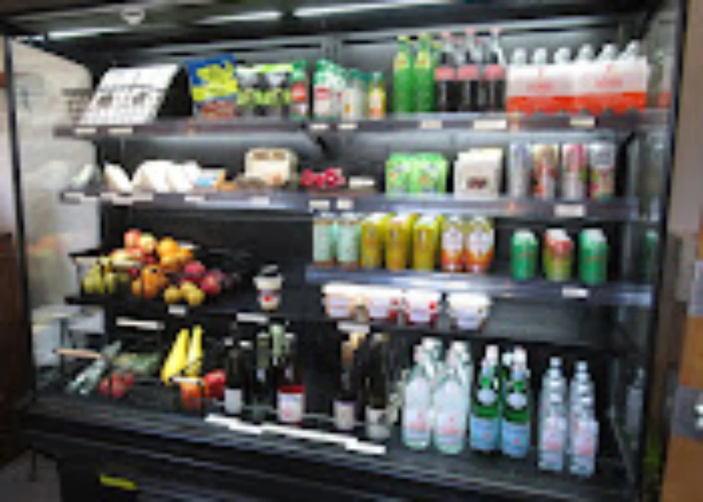
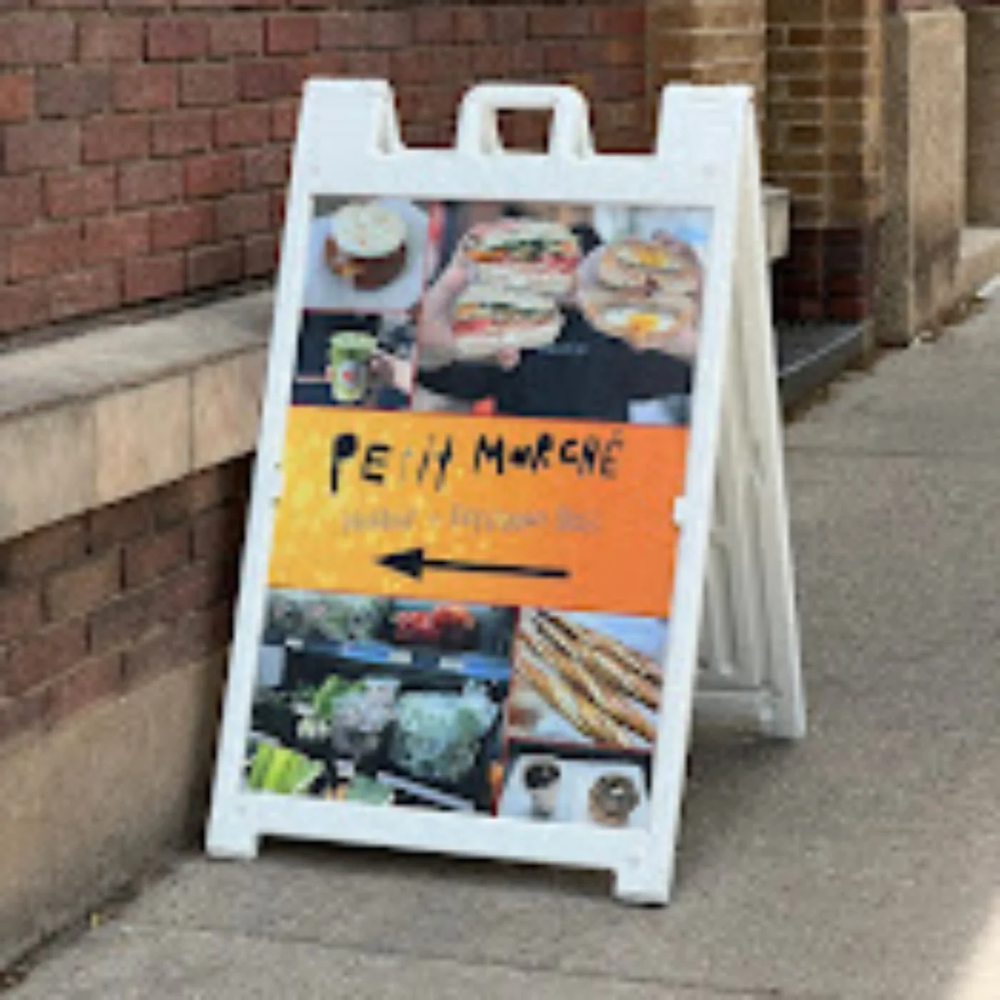
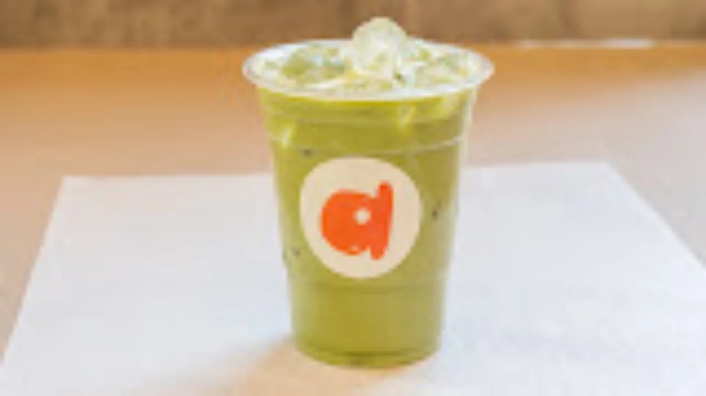
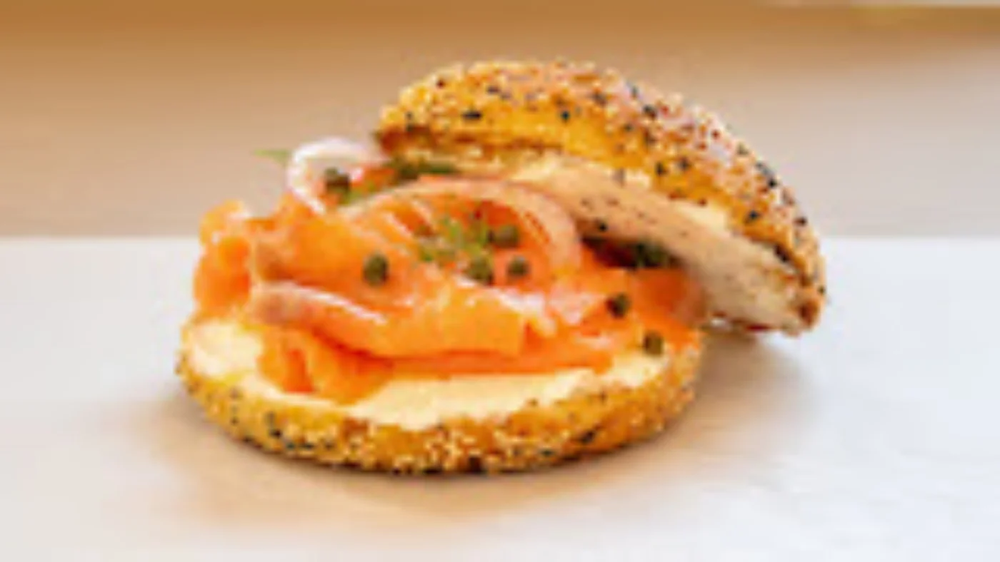
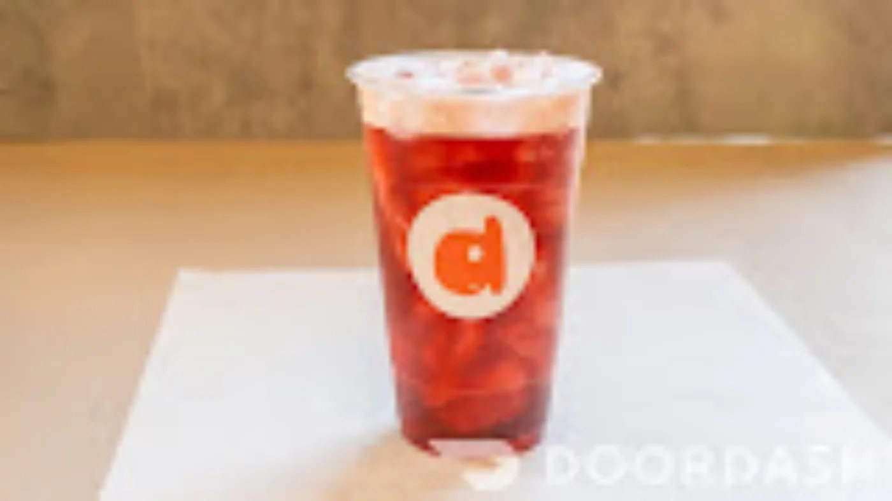
Make us a little stop on your next downtown stroll.
111 E. Aspen Avenue
Flagstaff, AZ 86001
For today's hours and offerings, give us a call or check our Google listing.